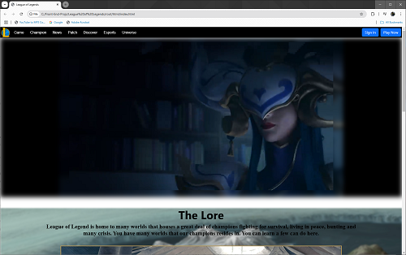
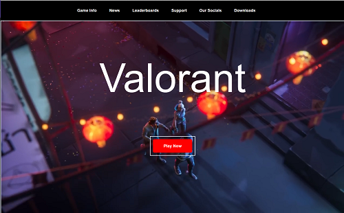

Profile
To see profile again, click here: Back to homepage
Projects
View selected projects below. More information can be found at my profile on github.

League of Legends Website
Videos, tutorials and a newsletter focusing on HTML, CSS and working in tech. Each video focuses on one HTML or CSS concept. I go over how it works, when to use it and show some real world examples. The companion articles are also posted on Medium as an alternative to video content.
Code
Valorant Website
Developed content and instruction for various web development courses including CSS Essential Training, Getting Your Website Online, Getting Your First Job as a Web Developer and more.
CodeGPU_Buy_Bot
Create a bot to help obtain a product of need because of product is in high demand and procuring one can be difficult
CodeWork Experience
My complete work history is available on LinkedIn.
Field Application Engineer
Giga Computing Technology Co., Ltd
Sept. 2024 - Present
As a Field Application Engineer at Giga Computing Technology, I specialize in post-sales support and troubleshooting server-related issues for customers. My role involves diagnosing and resolving hardware and software challenges, ensuring optimal server performance and reliability. I work closely with clients to provide technical guidance, debug system issues, and assist with deployment and maintenance. By leveraging my expertise in server architecture and customer support, I help enhance user experience and drive product efficiency.
Field Application Engineer
NDI
Oct 2022 - July 2024
As a Field Application Engineer (FAE), I serve as the vital link between our company and customers. My main job is to offer technical support and guidance, especially in industries like electronics and telecommunications. I assist customers in implementing our products effectively, provide training, troubleshoot issues, and gather feedback for improvements. Collaborating with internal teams is crucial to ensure we meet customer needs and drive innovation in our solutions.
Technical Account Manager
Jul 2021 - Oct 2022
Managed key clients and provided technical assistance to clients about the product
More details:
- Create new product SKU with customer while providing technical background on systems build
- Create and document prototype of SKU for clients to test and validate. Once validated, prototype becomes offical product.
- Clients provide further testing procedure or steps for the creation of the unit
- Work with Production team to construct and test for the product
Education
California State Polytechnic University- Pomona - Pomona, California
Bachelors of Science, Computer Engineer, 2018-2020
Mt. San Antonio College - Walnut, California
General Studies, 2015-2018